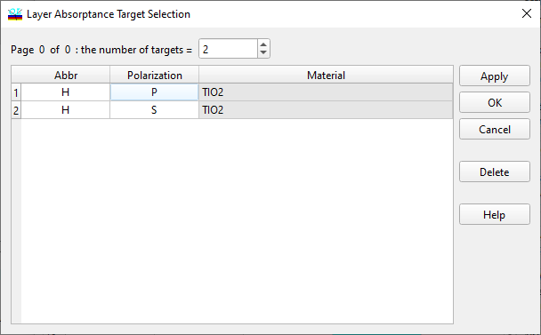
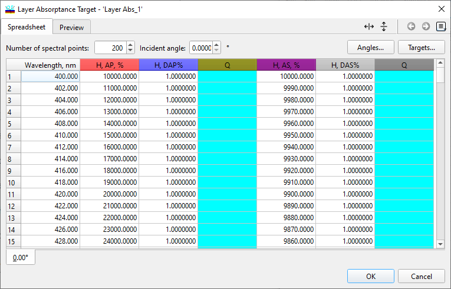

Layer Absorptance Target Selection
Layer Absorptance Target Selection
Navigation: OptiLayer Menu Commands > Data Menu > Layer Absorptance Target >
Layer Absorptance Target Selection
` <layer_absorptance_target.html>`__ ` <layer_absorptance_target.html>`__ ` <thickness_stress_target.html>`__
This dialog enables you to specify which targets should be optimized using the Layer Absorptance Target feature. By selecting the specific targets to optimize, you can tailor the optimization process to focus on the absorptance requirements in the designated layers.

The “Number of targets” entry field allows you to specify how many target specifications need to be considered. The spreadsheet will automatically adjust to accommodate this number. The “Abbr” column lets you select an abbreviation of the layer material that should be taken into account. The “Polarization” column allows you to choose the polarization type. The “Material” column displays the name of the material that corresponds to the selected abbreviation. Upon clicking the “Apply” or “OK” buttons, the Layer Absorptance Target Editor is updated accordingly. For instance, if two targets are configured as described above, the editor will appear as follows after the update.
